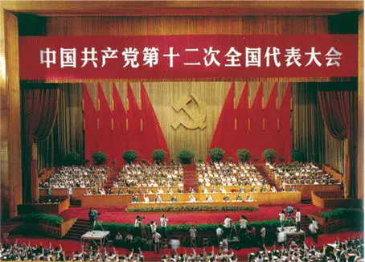
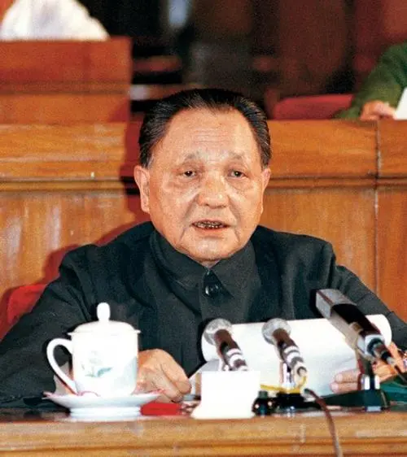
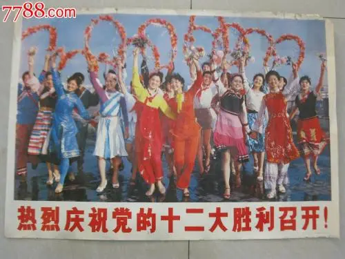

党的十二大

1982年9月，为总结党的十一届三中全会以后取得的成就和经验，全面开创社会主义现代化建设的新局面，党的十二大在北京召开。这次大会确定了全面开创社会主义现代化建设新局面的纲领。

邓小平同志在致大会开幕词时，第一次提出了“建设有中国特色的社会主义”的崭新命题。他说：“把马克思主义的普遍真理同我国的具体实际结合起来，走自己的路，建设有中国特色的社会主义，这就是我们总结长期历史经验得出的基本结论。”这是邓小平同志对党的十一届三中全会以来开辟的新道路、创建的新理论的准确概括。

党的十二大以后，在邓小平建设有中国特色社会主义理论的指引下，以稳定和完善家庭联产承包责任制为主要任务的农村改革进一步深入，以城市为重点的经济体制改革由试点发展到全面铺开，“经济特区—沿海开放城市—沿海经济开发区—内地”的全面对外开放格局逐渐形成，我国改革开放进入全面展开阶段。